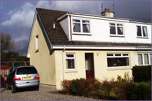

47 Achlonan (Taynuilt)

Price: £110,000
Situation
Number 47 is well located within this established cul-de-sac, only minutes from the village amenities and enjoying an open aspect to the rear, with views of Ben Cruachan and Beinn Mheadhonach.
The village of Taynuilt lies approximately 12 miles to the east of Oban. It has a number of traditional stores including butcher, grocer, and a Sub-Post Office. It has a modern doctors' surgery, Police Station, two churches, a hotel, a tea-room and a hairdressers. Other facilities include a sports field with an all weather pitch, a nine hole golf course and a recently modernised village hall. It also boasts a highly regarded primary school, whilst secondary education is undertaken at Oban, for which a regular bus service operates.
The Glasgow to Oban Rail Service stops at Taynuilt Station and the Village is served by the Citylink bus service - connecting villages from Glasgow to Oban.
The local centre of Oban provides a wider range of shopping facilities as well as professional offices. The town is the main Caledonian MacBrayne ferry terminal servicing the Inner Hebrides and several of the Outer Hebrides.
North Argyll is a particularly popular holiday destination and is an area of outstanding natural beauty. The sea lochs provide not only some of the best sailing waters in Europe, but also contain some of the most historic and interesting diving sites. The countryside is a mixture of quiet lochs through to the high peaks of Ben Cruachan and beyond and the famous ski centres of Glencoe and Aonach Mhor – which are within 1½ hours drive.
Directions
From the south take the A82 north turning left onto the A85 at Tyndrum, signposted to Oban. Drive through the villages of Dalmally and Lochawe to Taynuilt. Just before entering the main village take the left turn towards Brochroy. Follow down this road and take the right hand turn into Achlonan. Number 47 is on the left hand side.
Travelling from Oban and the north, continue through the village of Connel to Taynuilt. Take the left hand turn into the village and follow the road down past the golf course. Take the second left hand turn following the golf course into Achlonan. Number 47 is on the left hand side.
Description
Number 47 has been well maintained and benefits from replacement double glazed windows, doors and bargeboards. Internally it would benefit from an updating of the decorative order; however the accommodation is well appointed and offers extensive storage. The heating is via total control heaters and the lighting a mixture of pendant and ceiling lights.
The property enjoys an open aspect to the rear with mountain views, and a westerly aspect to the front, looking out over the neighbouring properties.
The accommodation (with approximate sizes for guidance purposes only) comprises:-
Patterned glazed door to the vestibule. Inner glazed door to:-
Hallway
Useful recess for coat and shoe storage. Doors to the living room, kitchen, WC and staircase to the first floor.
Living Room 6.22m max x 3.27m
Through room with windows to the front (W) and rear (E). Electric fire. Door to:-
Kitchen 4.41m max x 4.14m max
L-shaped. Window to the rear (E). Range of wall and floor units. Hygena sink unit with mixer tap and drainer. Wood effect worktops. Electra four ring cooker. AEG Lavamat. Deep, walk- in larder cupboard with extensive shelving and an electric light. Door to hallway. Patterned double glazed door to rear garden.
WC
Patterned window to the front (W). Wash hand basin and WC. Wall mounted corner shelf. Internal patterned fixed light allowing natural light to flow into the hallway.
From the hallway the staircase rises to a turn on the half landing. Window to the side (N). Deep storage cupboard. On the upper landing there is a further large storage cupboard (1.72m x 1.90m) with shelving and electric light, and a shelved storage cupboard. Doors lead off to the three bedrooms and bathroom.
Bedroom 1 3.83m x 2.37m
Dormer window to the front (W). Built-in storage cupboard. Television point.
Bedroom 2 3.34m x 3.24m
Dormer window to the front (W). Built-in airing cupboard housing the hot water tank and with slatted shelves. Television point.
Bedroom 3 3.24m x 2.87m
Window to the rear (E). Deep wardrobe. Television point.
Bathroom 1.97m x 1.86m
Patterned window to the rear (E). Three piece suite in white comprising wash hand basin, WC and original cast iron bath with Gainsborough electric shower, rail and curtain. Wall mounted bathroom cabinet.
External
The property has easily maintained gardens, mostly laid to grass to the front and rear. The front garden is bordered by a neat hedge and the gravel driveway leads down the side of the house to the pedestrian wooden gate into the rear garden. The rear garden is enclosed within wooden fencing and has a paved patio area. Good sized timber garden shed.
Services
Mains water, electricity and drainage. Broadband available.
Council Tax
Band "C"
Viewing
Viewings will be strictly by appointment through the sole selling agents. If there is a particular aspect of the property, which is important to you, then please discuss it with a member of staff of D M MacKinnon Estates in order to avoid a wasted journey
Entry
Entry will be by mutual agreement
Closing date
A closing date may be set for the receipt of offers. Interested parties should note their interest in the property
Note
The contents are included in the sale |